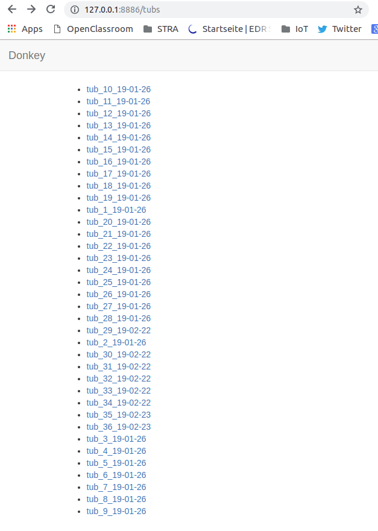
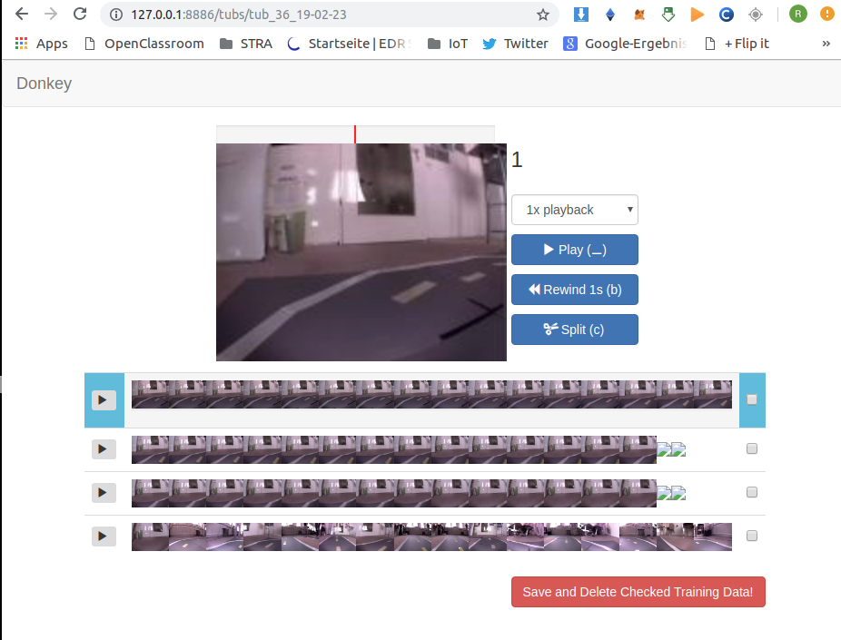
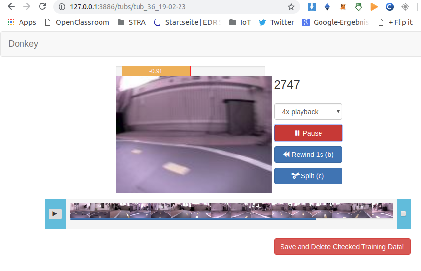

Chapter 7 Driving & Training following Tawn Kramer (By Rainer Bareiß)
following Tawn Kramer https://github.com/tawnkramer/donkey/blob/master/docs/guide/get_driving.md
7.1 Environment
activate: source activate donkey_3tk4
get installed software: conda env export > environment.yml content of environment.yml
7.2 Read data from pi
(carnd-tf16) rainer@neuron:/media/rainer/_data/20-data/M3-robocar_training/20190112-Shackspace/raw$
rsync -r pi@siliconpi1:~/20190112-tub-shack/tub? . 7.3 Check data raw & prepared
(donkey_3tk4) rainer@neuron:/media/rainer/_data/20-data/M3-robocar_training/20190112-Shackspace$ donkey
tubcheck raw/tub1 raw/tub2 raw/tub3 raw/tub4 `
(carnd-tf16) rainer@neuron:/media/rainer/_data/20-data/M3-robocar_training/20190223-Shackspace$
donkey tubcheck tub*7.4 3. Clean data
(carnd-tf16) rainer@neuron:/media/rainer/_data/20-data/M3-robocar_training$
donkey tubclean 20190223-Shackspace/
using donkey version: 2.5.7 ...
Listening on 8886...  
7.5 Make movie
(carnd-tf16) rainer@neuron:/media/rainer/_data/20-data/M3-robocar_training/20190112-Shackspace$
donkey makemovie --tub=raw/tub1 --config=raw/config.py --out=tub1.mp4
(carnd-tf16) rainer@neuron:/media/rainer/_data/20-data/M3-robocar_training/20190223-Shackspace$
scp pi@siliconpi2:~/d2/config.py .
donkey makemovie --tub=raw/tub_36_19-02-23 --config=config.py --out=tub_36_19-02-23.mp47.6 tubhist
(donkey_3tk4) rainer@neuron:~/dev/25-donkey_3tk$
donkey tubhist \
--tub /media/rainer/_data/20-data/M3-robocar_training/20190112-Shackspace/prepared/*tubhist_shack
(donkey_3tk4) rainer@neuron:~/dev/25-donkey_3tk$
donkey tubhist \
--tub /media/rainer/_data/20-data/M3-robocar_training/20190126-TawnKramer/combined_donkey_tub_data/* tubhist_tawn
(donkey_3tk4) rainer@neuron:/media/rainer/_data/20-data/M3-robocar_training/20190223-Shackspace$
donkey tubhist --tub prepared/*tubhist_tub_36_19-02-23
7.7 Train Data
(donkey_3tk4) rainer@neuron:~/dev/25-donkey_3tk/mycar/$ python manage.py train \ --tub=/media/rainer/_data/20-data/M3-robocar_training/20190112-Shackspace/prepared/* \ --model=/home/rainer/dev/25-donkey_3tk/mycar/models/shack1.h5
model loss for training shack1.h5
(donkey_3tk4) rainer@neuron:~/dev/25-donkey_3tk/mycar$
python train.py \
--tub=/media/rainer/_data/20-data/M3-robocar_training/20190223-Shackspace/prepared/* \
--model=/home/rainer/dev/25-donkey_3tk/mycar/models/shack2.h5model loss for training shack2.h5
Attention: What happened during training above? Hint, mind the accuracy of testing data.
7.8 Plot data against model
cd (donkey_3tk4) rainer@neuron:~/dev/25-donkey_3tk/mycar
donkey tubplot \
--tub=/media/rainer/_data/20-data/M3-robocar_training/20190112-Shackspace/prepared/tub2_c \
--model=/home/rainer/dev/25-donkey_3tk/mycar/models/shack1.h5 tub2_c
tub3_c
tub4_c
(donkey_3tk4) rainer@neuron:~/dev/25-donkey_3tk/mycar$
donkey tubplot \
--tub=/media/rainer/_data/20-data/M3-robocar_training/20190112-Shackspace/prepared/tub4_c \
--model=/home/rainer/dev/25-donkey_3tk/mycar/models/shack2.h5 tub4_cvs shack2
7.9 Run in simulator
(donkey_3tk4) rainer@neuron:~/dev/25-donkey_3tk/donkey_gym/examples/supervised_learning$
# python evaluate.py --model /home/rainer/dev/25-donkey_3tk/mycar/models/tawn_shark_cl.h5
python evaluate.py --model /home/rainer/dev/25-donkey_3tk/mycar/models/shack1.h5
(donkey_3tk4) rainer@neuron:~/dev/25-donkey_3tk/DonkeySimLinux$ ./donkey_sim.x86_64 7.10 Copy model to pi
(donkey_3tk) rainer@neuron:~/dev/25-donkey_3tk$
scp /home/rainer/dev/25-donkey_3tk/mycar/models/shack1.h5 pi@siliconpi2:~/d2/models7.11 Run model on pi
(env) pi@siliconpi1:~/mycar_autopilot $
python manage.py drive --model=models/shack1.h5
python manage.py drive --model <path/to/model> --jsHit the Select button to toggle between three modes - User, Local Angle, and Local Throttle & Angle.
User - User controls both steering and throttle with joystick
Local Angle - Ai controls steering, user controls throttle
Local Throttle & Angle - Ai controls both steering and throttle
When the car is in Local Angle mode, the NN will steer. You must provide throttle.
7.12 11. Watch pi camera
(donkey_3tk) rainer@neuron:~/dev/25-donkey_3tk/mycar$
python ../donkey/scripts/remote_cam_view.py --ip=siliconpi2
remote browser: http://siliconpi2:3233 7.13 Reinfocement Learning
(donkey_3tk) rainer@neuron:~/dev/25-donkey_3tk/donkey_gym/examples/reinforcement_learning$
python ddqn.py --sim /home/rainer/dev/25-donkey_3tk/DonkeySimLinux/donkey_sim.x86_64
Testing ppo trained net
(donkey_3tk) rainer@neuron:~/dev/25-donkey_3tk/donkey_gym/examples/reinforcement_learning$
python ppo_train.py --test --sim /home/rainer/dev/25-donkey_3tk/DonkeySimLinux/donkey_sim.x86_64
python ppo_train.py --sim /home/rainer/dev/25-donkey_3tk/DonkeySimLinux/donkey_sim.x86_64 --env_name donkey-generated-roads-v0
python ppo_train.py --sim /home/rainer/dev/25-donkey_3tk/DonkeySimLinux/donkey_sim.x86_64 --env_name donkey-generated-roads-v0 --headless 1
python ppo_train.py --sim /home/rainer/dev/25-donkey_3tk/DonkeySimLinux/donkey_sim.x86_64 --env_name donkey-generated-roads-v0 --headless 1 --multi(donkey_3tk) rainer@neuron:~/dev/25-donkey_3tk$ python donkey_gym/examples/supervised_learning/evaluate.py --model=siliconpi_neuron1_donkey2.h5
using donkey v2.5.0t ...
2019-01-15 18:42:56.116375: I tensorflow/core/platform/cpu_feature_guard.cc:141] Your CPU supports instructions that this TensorFlow binary was not compiled to use: AVX2 FMA
binding to ('0.0.0.0', 9091)
got a new client ('127.0.0.1', 40308)
unknown message type scene_selection_ready
connection dropped
got a new client ('127.0.0.1', 40310)
unknown message type car_loaded
fps 20.194938775588813
fps 19.99812811253143
fps 20.00077822852299
fps 20.002373023227776
fps 19.99857054437418
fps 20.001034790170067
fps 19.998124298548927
fps 20.001525041510646
fps 20.000947997203312
fps 19.998230137103345